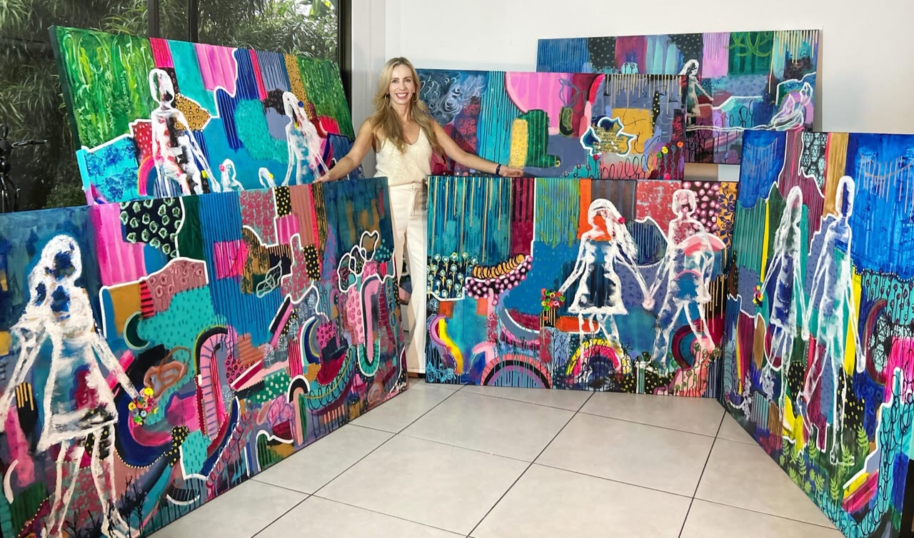
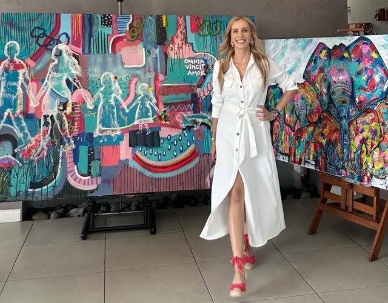
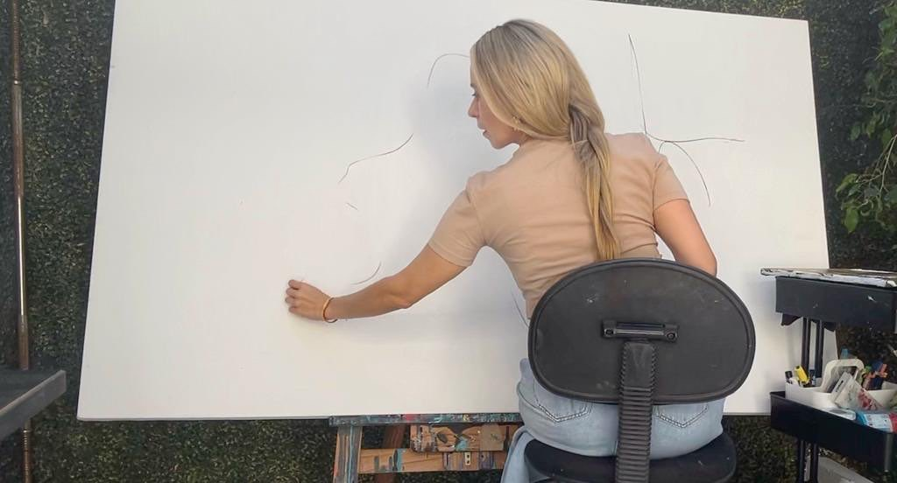
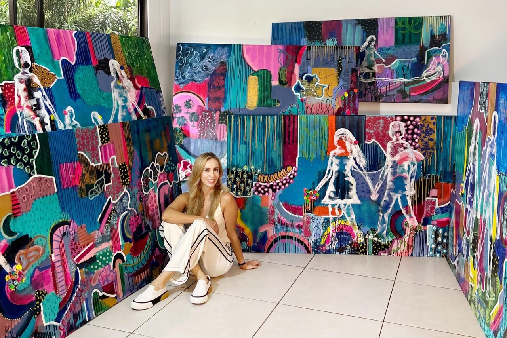

Rocio Villamizar Bohórquez
The artist

I am Rocio Villamizar Bohórquez, a Colombian and Costa Rican artist. I paint emotion and feeling onto canvas.
I trained in England, Brazil, Colombia and Costa Rica. Those schools and those cities gave me a way of painting that is my own. The work comes from what I saw: other cultures, other lights, and the life I carry with me.
I have been at this for more than eighteen years. Nature, people and what we feel as time passes are the material. The figures are that feeling, set down in color.
The figures I set down on canvas are the reflection of those feelings and experiences.
Rocio Villamizar
The studio
Before the color.
The canvas begins in white. Then the color arrives.


Exhibitions
- 2023 NowJuan Santamaría Airport, VIP loungeCosta Rica
- 2022 NowFN ART GalleryCosta Rica
- 2022Galería Vida del ArteCosta Rica
- 2021The Golden Ratio, Palazzo RuspoliRome
- 2018Parque LageRio de Janeiro
- 2017ScenariumRio de Janeiro
- 2016EmbrujarteCosta Rica
- 2015Art Walk, Avenida EscazúCosta Rica
- 2014EmbrujarteCosta Rica
- 2013Fundación BrasilCosta Rica
Interview
I am sharing this interview. It is an experience that fills me with happiness: here I could show a little more of my work, and of myself, as an artist and as a Colombian and Costa Rican woman.
If you would like a work, or to see the studio, write to me.
WhatsApp